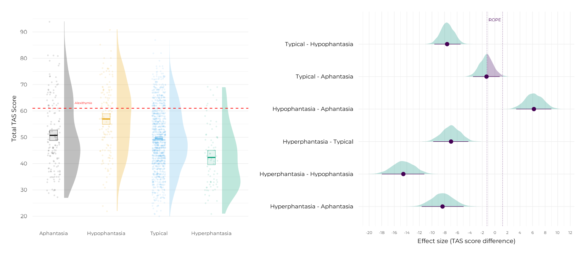
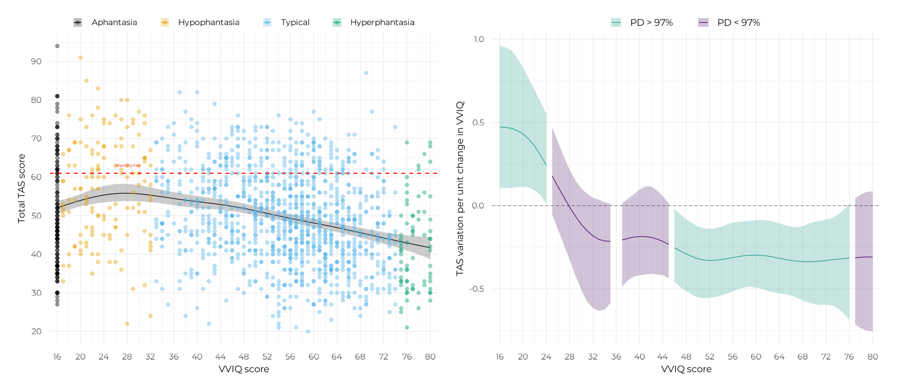
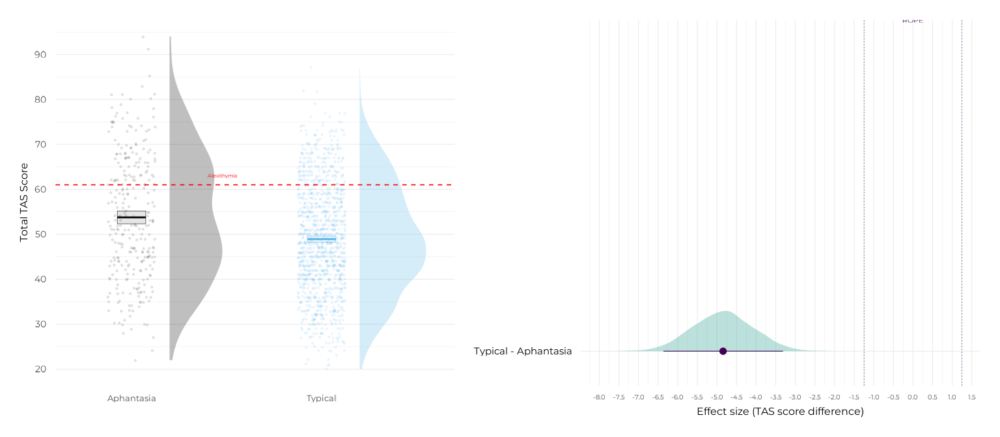

library(aphantasiaEmotions)
library(ggplot2)
library(patchwork)
pkg <- "aphantasiaEmotions"
refit <- "never"
options("marginaleffects_safe" = FALSE)
draws <- seq(1, 4000, 1) # To limit draws that will be used for marginaleffectsThe 4-group categorical model and the Bayesian GAM were this study’s original, primary models, reported in the first version of the manuscript. The model-comparison arc now prefers the floor-group and segmented models instead, as both fit the data decisively better by LOO. This page is not a retraction of the original models so much as a record of them: they are genuinely informative, we checked them thoroughly, and we think it is worth showing that check in full rather than letting them quietly disappear from the documentation once something else took the spotlight.
The code and figures below are close to unchanged from the original, single-vignette version of this package’s report. They are reused here rather than redone, since the underlying question they answer (how does each model describe the data) hasn’t changed, even though our headline answer to the overall research question has moved on to a different model.
For completeness, and because a reviewer specifically asked what the simpler, more common 2-group split (aphantasia, VVIQ 32, vs. typical) would have shown, we also report the contrasts of this model here, even though it was not part of our original analysis plan.
Total TAS-20 scores
4-group categorical model
lm_categorical_4g <- fit_brms_model(
formula = tas ~ vviq_group_4,
data = all_data,
prior = brms::prior(normal(0, 20), class = "b"),
file = system.file("models", "lm_categorical_4g_tot.rds", package = pkg),
file_refit = refit
)
contrasts_tot <- marginaleffects::comparisons(
lm_categorical_4g,
variables = list("vviq_group_4" = "pairwise"),
draw_ids = draws
)
report_rope(contrasts_tot, contrast) |> knitr::kable(digits = 3)| contrast | Estimate | 95% CI | d | PD | Below ROPE | Inside ROPE | Above ROPE |
|---|---|---|---|---|---|---|---|
| hyperphantasia - aphantasia | -8.322 | [-11.641, -4.971] | 0.67 | 1.0 | 1.000 | 0.000 | 0.00 |
| hyperphantasia - hypophantasia | -14.556 | [-17.975, -11.215] | 1.17 | 1.0 | 1.000 | 0.000 | 0.00 |
| hyperphantasia - typical | -6.967 | [-9.8, -4.215] | 0.56 | 1.0 | 1.000 | 0.000 | 0.00 |
| hypophantasia - aphantasia | 6.217 | [3.397, 8.991] | 0.50 | 1.0 | 0.000 | 0.000 | 1.00 |
| typical - aphantasia | -1.326 | [-3.466, 0.768] | 0.11 | 0.9 | 0.531 | 0.459 | 0.01 |
| typical - hypophantasia | -7.592 | [-9.63, -5.453] | 0.61 | 1.0 | 1.000 | 0.000 | 0.00 |
p_contr_tot <- plot_posterior_contrasts(
contrasts_tot,
lm_categorical_4g,
base_size = 12,
rope_txt = 3,
dot_size = 1,
x_lab = "Effect size (TAS score difference)",
axis_relative_x = 0.7
)
p_tot <- plot_group_violins(
tas ~ vviq_group_4,
y_lab = "Total TAS Score",
base_size = 12
) +
plot_alexithymia_cutoff(txt_size = 2, txt_x = 1.4, label = "Alexithymia") +
scale_discrete_aphantasia() +
scale_x_aphantasia(add = c(0.4, 0.7))
p_tot + p_contr_tot
(Convergence and posterior predictive check: model diagnostics §Categorical, 4 groups.)
Bayesian GAM
gam_tot <- fit_brms_model(
formula = tas ~ s(vviq),
data = all_data,
prior = brms::prior(normal(0, 20), class = "b"),
file = system.file("models", "gam_tot.rds", package = pkg),
file_refit = refit
)
slopes_tot <- modelbased::estimate_slopes(
gam_tot,
trend = "vviq",
by = "vviq",
length = 75,
rope_ci = 1
)
check_slope_evidence(slopes_tot) |> knitr::kable(digits = 3)| VVIQ | Median | CI | PD | Evidence |
|---|---|---|---|---|
| 16 | 0.472 | [0.106, 0.959] | 0.997 | Non null |
| 17 | 0.471 | [0.106, 0.952] | 0.997 | Non null |
| 18 | 0.465 | [0.107, 0.932] | 0.998 | Non null |
| 19 | 0.452 | [0.111, 0.888] | 0.998 | Non null |
| 20 | 0.431 | [0.112, 0.83] | 0.998 | Non null |
| 21 | 0.400 | [0.11, 0.761] | 0.998 | Non null |
| 22 | 0.357 | [0.092, 0.694] | 0.997 | Non null |
| 23 | 0.303 | [0.062, 0.624] | 0.995 | Non null |
| 24 | 0.242 | [0.012, 0.55] | 0.981 | Non null |
| 25 | 0.178 | [-0.054, 0.471] | 0.935 | Uncertain |
| 26 | 0.114 | [-0.144, 0.381] | 0.833 | Uncertain |
| 27 | 0.051 | [-0.236, 0.294] | 0.667 | Uncertain |
| 28 | -0.009 | [-0.324, 0.214] | 0.528 | Uncertain |
| 29 | -0.064 | [-0.422, 0.15] | 0.706 | Uncertain |
| 30 | -0.112 | [-0.505, 0.103] | 0.826 | Uncertain |
| 31 | -0.151 | [-0.577, 0.071] | 0.895 | Uncertain |
| 32 | -0.182 | [-0.616, 0.048] | 0.930 | Uncertain |
| 33 | -0.202 | [-0.633, 0.036] | 0.951 | Uncertain |
| 34 | -0.212 | [-0.624, 0.021] | 0.962 | Uncertain |
| 35 | -0.215 | [-0.586, 0.011] | 0.968 | Uncertain |
| 36 | -0.211 | [-0.537, 0.006] | 0.971 | Non null |
| 37 | -0.206 | [-0.488, 0.015] | 0.967 | Uncertain |
| 38 | -0.197 | [-0.448, 0.041] | 0.954 | Uncertain |
| 39 | -0.189 | [-0.426, 0.068] | 0.936 | Uncertain |
| 40 | -0.185 | [-0.418, 0.096] | 0.919 | Uncertain |
| 41 | -0.186 | [-0.413, 0.116] | 0.912 | Uncertain |
| 42 | -0.191 | [-0.408, 0.115] | 0.913 | Uncertain |
| 43 | -0.201 | [-0.412, 0.091] | 0.928 | Uncertain |
| 44 | -0.215 | [-0.418, 0.056] | 0.948 | Uncertain |
| 45 | -0.232 | [-0.435, 0.015] | 0.968 | Uncertain |
| 46 | -0.253 | [-0.458, -0.017] | 0.981 | Non null |
| 47 | -0.272 | [-0.489, -0.051] | 0.990 | Non null |
| 48 | -0.290 | [-0.514, -0.082] | 0.995 | Non null |
| 49 | -0.306 | [-0.536, -0.104] | 0.997 | Non null |
| 50 | -0.318 | [-0.551, -0.125] | 0.998 | Non null |
| 51 | -0.326 | [-0.556, -0.136] | 0.999 | Non null |
| 52 | -0.329 | [-0.553, -0.14] | 0.999 | Non null |
| 53 | -0.328 | [-0.548, -0.136] | 0.999 | Non null |
| 54 | -0.324 | [-0.539, -0.127] | 0.999 | Non null |
| 55 | -0.318 | [-0.529, -0.114] | 0.998 | Non null |
| 56 | -0.312 | [-0.515, -0.101] | 0.997 | Non null |
| 57 | -0.306 | [-0.5, -0.097] | 0.996 | Non null |
| 58 | -0.301 | [-0.491, -0.094] | 0.996 | Non null |
| 59 | -0.298 | [-0.486, -0.091] | 0.997 | Non null |
| 60 | -0.297 | [-0.493, -0.088] | 0.997 | Non null |
| 61 | -0.299 | [-0.5, -0.086] | 0.996 | Non null |
| 62 | -0.303 | [-0.512, -0.09] | 0.995 | Non null |
| 63 | -0.309 | [-0.519, -0.097] | 0.997 | Non null |
| 64 | -0.316 | [-0.528, -0.106] | 0.998 | Non null |
| 65 | -0.323 | [-0.532, -0.118] | 0.999 | Non null |
| 66 | -0.329 | [-0.541, -0.126] | 0.999 | Non null |
| 67 | -0.334 | [-0.553, -0.128] | 0.998 | Non null |
| 68 | -0.336 | [-0.57, -0.123] | 0.997 | Non null |
| 69 | -0.337 | [-0.583, -0.108] | 0.996 | Non null |
| 70 | -0.336 | [-0.592, -0.097] | 0.995 | Non null |
| 71 | -0.334 | [-0.597, -0.091] | 0.994 | Non null |
| 72 | -0.330 | [-0.594, -0.084] | 0.994 | Non null |
| 73 | -0.325 | [-0.6, -0.074] | 0.993 | Non null |
| 74 | -0.321 | [-0.616, -0.056] | 0.989 | Non null |
| 75 | -0.318 | [-0.646, -0.026] | 0.982 | Non null |
| 76 | -0.314 | [-0.683, 0.011] | 0.971 | Non null |
| 77 | -0.313 | [-0.714, 0.045] | 0.960 | Uncertain |
| 78 | -0.310 | [-0.737, 0.068] | 0.951 | Uncertain |
| 79 | -0.308 | [-0.751, 0.083] | 0.945 | Uncertain |
| 80 | -0.308 | [-0.755, 0.087] | 0.943 | Uncertain |
p_slopes_tot <- plot_gam_slopes(
slopes_tot,
.f_groups = dplyr::case_when(
vviq <= 24 ~ 1,
vviq <= 35 ~ 2,
vviq <= 36 ~ 3,
vviq <= 45 ~ 4,
vviq <= 76 ~ 5,
vviq <= 80 ~ 6
),
y_lab = "TAS variation per unit change in VVIQ",
base_size = 12
)
p_gam_tot <- plot_gam_means(
gam_tot,
y_lab = "Total TAS score",
legend_relative = 0.85,
base_size = 12
) +
plot_coloured_subjects(x = all_data$vviq, y = all_data$tas, size = 1) +
plot_alexithymia_cutoff(txt_x = 26, label = "Alexithymia") +
scale_discrete_aphantasia() +
scale_x_vviq()
p_gam_tot + p_slopes_tot
(Convergence and posterior predictive check: model diagnostics §GAM.)
2-group categorical model
lm_categorical_2g <- fit_brms_model(
formula = tas ~ vviq_group_2,
data = all_data,
prior = brms::prior(normal(0, 20), class = "b"),
file = system.file("models", "lm_categorical_2g_tot.rds", package = pkg),
file_refit = refit
)
contrasts_2g_tot <- marginaleffects::comparisons(
lm_categorical_2g,
variables = list("vviq_group_2" = "pairwise"),
draw_ids = draws
)
report_rope(contrasts_2g_tot, contrast) |> knitr::kable(digits = 3)| contrast | Estimate | 95% CI | d | PD | Below ROPE | Inside ROPE | Above ROPE |
|---|---|---|---|---|---|---|---|
| typical - aphantasia | -4.842 | [-6.364, -3.316] | 0.39 | 1 | 1 | 0 | 0 |
p_contr_2g_tot <- plot_posterior_contrasts(
contrasts_2g_tot,
lm_categorical_2g,
base_size = 12,
rope_txt = 3,
dot_size = 1,
x_lab = "Effect size (TAS score difference)",
axis_relative_x = 0.7
)
p_2g_tot <- plot_group_violins(
tas ~ vviq_group_2,
y_lab = "Total TAS Score",
base_size = 12,
violin_flip = 1,
violin_nudge = c(-0.2, 0.2)
) +
plot_alexithymia_cutoff(txt_size = 2, txt_x = 1.4, label = "Alexithymia") +
scale_discrete_aphantasia() +
scale_x_aphantasia(add = c(0.7, 0.7))
p_2g_tot + p_contr_2g_tot
(Convergence and posterior predictive check: model diagnostics §Categorical, 2 groups.)
TAS-20 sub-scales
The same two models were fit separately on each of the three TAS-20 sub-scales (DIF, DDF, EOT). Full figures and statistical results for these were part of the original manuscript; they are not reproduced here since the pattern across sub-scales did not depart dramatically from the one observed for the total TAS. We refer interested readers to the original manuscript for these details, or to the new final per-sub-scale analysis using the best model (the “floor-group” model) on its dedicated page.
#> ─ Session info ───────────────────────────────────────────────────────────────
#> setting value
#> version R version 4.6.1 (2026-06-24)
#> os Ubuntu 22.04.5 LTS
#> system x86_64, linux-gnu
#> ui X11
#> language en
#> collate C.UTF-8
#> ctype C.UTF-8
#> tz UTC
#> date 2026-08-27
#> pandoc 3.8.3 @ /opt/hostedtoolcache/pandoc/3.8.3/x64/ (via rmarkdown)
#> quarto NA
#>
#> ─ Packages ───────────────────────────────────────────────────────────────────
#> ! package * version date (UTC) lib source
#> abind 1.4-8 2024-09-12 [1] RSPM
#> aphantasiaEmotions * 1.0 2026-08-27 [1] local
#> backports 1.5.1 2026-04-03 [1] RSPM
#> bayesplot 1.16.0 2026-08-25 [1] RSPM
#> bayestestR 0.18.1 2026-05-24 [1] RSPM
#> bridgesampling 1.2-1 2025-11-19 [1] RSPM
#> brms 2.23.0 2025-09-09 [1] RSPM
#> Brobdingnag 1.2-9 2022-10-19 [1] RSPM
#> P bslib 0.12.0 2026-08-04 [?] RSPM
#> P cachem 1.1.0 2024-05-16 [?] RSPM
#> checkmate 2.3.4 2026-02-03 [1] RSPM
#> P cli 3.6.6 2026-04-09 [?] RSPM
#> coda 0.19-4.1 2024-01-31 [1] RSPM
#> P codetools 0.2-20 2024-03-31 [?] CRAN (R 4.6.1)
#> collapse 2.1.7 2026-05-19 [1] RSPM
#> P crayon 1.5.3 2024-06-20 [?] RSPM
#> P curl 8.0.0 2026-08-25 [?] RSPM
#> data.table 1.18.6.1 2026-08-24 [1] RSPM
#> datawizard 1.3.1 2026-04-26 [1] RSPM
#> P desc 1.4.3 2023-12-10 [?] RSPM
#> P devtools * 2.5.2 2026-04-30 [?] RSPM
#> P digest 0.6.39 2025-11-19 [?] RSPM
#> distributional 0.8.1 2026-06-27 [1] RSPM
#> dplyr 1.2.1 2026-04-03 [1] RSPM
#> P ellipsis 0.3.3 2026-04-04 [?] RSPM
#> P evaluate 1.0.5 2025-08-27 [?] RSPM
#> farver 2.1.2 2024-05-13 [1] RSPM
#> P fastmap 1.2.0 2024-05-15 [?] RSPM
#> P fs 2.1.0 2026-04-18 [?] RSPM
#> generics 0.1.4 2025-05-09 [1] RSPM
#> ggdist 3.3.3 2025-04-23 [1] RSPM
#> ggplot2 * 4.0.3 2026-04-22 [1] RSPM
#> P glue 1.8.1 2026-04-17 [?] RSPM
#> gridExtra 2.3.1 2026-06-25 [1] RSPM
#> gtable 0.3.6 2024-10-25 [1] RSPM
#> P htmltools 0.5.9 2025-12-04 [?] RSPM
#> P htmlwidgets 1.6.4 2023-12-06 [?] RSPM
#> inline 0.3.21 2025-01-09 [1] RSPM
#> insight 1.5.3 2026-08-25 [1] RSPM
#> P jquerylib 0.1.4 2021-04-26 [?] RSPM
#> P jsonlite 2.0.0 2025-03-27 [?] RSPM
#> P knitr 1.51 2025-12-20 [?] RSPM
#> labeling 0.4.3 2023-08-29 [1] RSPM
#> P lattice 0.22-9 2026-02-09 [?] CRAN (R 4.6.1)
#> P lifecycle 1.0.5 2026-01-08 [?] RSPM
#> loo 2.10.1 2026-07-24 [1] RSPM
#> P magrittr 2.0.5 2026-04-04 [?] RSPM
#> marginaleffects 0.32.0 2026-02-14 [1] RSPM
#> P Matrix 1.7-5 2026-03-21 [?] CRAN (R 4.6.1)
#> matrixStats 1.5.0 2025-01-07 [1] RSPM
#> P memoise 2.0.1 2021-11-26 [?] RSPM
#> P mgcv 1.9-4 2025-11-07 [?] CRAN (R 4.6.1)
#> modelbased 0.16.0 2026-06-30 [1] RSPM
#> mvtnorm 1.4-2 2026-07-12 [1] RSPM
#> P nlme 3.1-169 2026-03-27 [?] CRAN (R 4.6.1)
#> P otel 0.2.0 2025-08-29 [?] RSPM
#> parameters 0.29.2 2026-06-28 [1] RSPM
#> patchwork * 1.3.2 2025-08-25 [1] RSPM
#> P pillar 1.11.1 2025-09-17 [?] RSPM
#> P pkgbuild 1.4.8 2025-05-26 [?] RSPM
#> P pkgconfig 2.0.3 2019-09-22 [?] RSPM
#> P pkgdown 2.2.1 2026-07-07 [?] RSPM
#> P pkgload 1.5.3 2026-06-15 [?] RSPM
#> posterior 1.7.0 2026-04-01 [1] RSPM
#> P purrr 1.2.2 2026-04-10 [?] RSPM
#> QuickJSR 1.11.0 2026-08-21 [1] RSPM
#> P R6 2.6.1 2025-02-15 [?] RSPM
#> P ragg 1.5.2 2026-03-23 [?] RSPM
#> rbibutils 2.4.1 2026-01-21 [1] RSPM
#> RColorBrewer 1.1-3 2022-04-03 [1] RSPM
#> P Rcpp 1.1.2 2026-07-05 [?] RSPM
#> RcppParallel 6.2.0 2026-07-30 [1] RSPM
#> Rdpack 2.6.6 2026-02-08 [1] RSPM
#> reformulas 0.4.4 2026-02-02 [1] RSPM
#> renv 1.1.4 2025-03-20 [1] RSPM (R 4.6.1)
#> P rlang 1.3.0 2026-07-05 [?] RSPM
#> P rmarkdown 2.31 2026-03-26 [?] RSPM
#> rstan 2.32.7 2025-03-10 [1] RSPM
#> rstantools 2.7.0 2026-07-26 [1] RSPM
#> S7 0.2.2 2026-04-22 [1] RSPM
#> P sass 0.4.10 2025-04-11 [?] RSPM
#> scales 1.4.0 2025-04-24 [1] RSPM
#> see 0.14.1 2026-06-29 [1] RSPM
#> P sessioninfo 1.2.4 2026-06-04 [?] RSPM
#> showtext 0.9-8 2026-03-21 [1] RSPM
#> showtextdb 3.0 2020-06-04 [1] RSPM
#> StanHeaders 2.32.10 2024-07-15 [1] RSPM
#> P stringi 1.8.9 2026-08-04 [?] RSPM
#> stringr 1.6.0 2025-11-04 [1] RSPM
#> sysfonts 0.8.9 2024-03-02 [1] RSPM
#> P systemfonts 1.3.2 2026-03-05 [?] RSPM
#> tensorA 0.36.2.1 2023-12-13 [1] RSPM
#> P textshaping 1.0.5 2026-03-06 [?] RSPM
#> P tibble 3.3.1 2026-01-11 [?] RSPM
#> tidyr 1.3.2 2025-12-19 [1] RSPM
#> tidyselect 1.2.1 2024-03-11 [1] RSPM
#> P usethis * 3.2.1 2025-09-06 [?] RSPM
#> P vctrs 0.7.3 2026-04-11 [?] RSPM
#> viridis 0.6.5 2024-01-29 [1] RSPM
#> viridisLite 0.4.3 2026-02-04 [1] RSPM
#> P withr 3.0.3 2026-06-19 [?] RSPM
#> P xfun 0.60 2026-07-09 [?] RSPM
#> P yaml 2.3.12 2025-12-10 [?] RSPM
#>
#> [1] /home/runner/.cache/R/renv/library/aphantasiaEmotions-8f3b5e1f/linux-ubuntu-jammy/R-4.6/x86_64-pc-linux-gnu
#> [2] /home/runner/.cache/R/renv/sandbox/linux-ubuntu-jammy/R-4.6/x86_64-pc-linux-gnu/e7c0fad7
#>
#> * ── Packages attached to the search path.
#> P ── Loaded and on-disk path mismatch.
#>
#> ──────────────────────────────────────────────────────────────────────────────